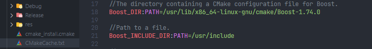
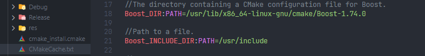

cmake 相关
cmake 变量
cmake 的 find_package 命令，会在找到包后，生成一些变量，可以查看生成目录下的 CMakeCache.txt 文件，里面有对应的变量名以及相应的值。 比如
find_package(Boost 1.74.0 REQUIRED)
会生成
cmake 的 find_package 命令，会在找到包后，生成一些变量，可以查看生成目录下的 CMakeCache.txt 文件，里面有对应的变量名以及相应的值。 比如
find_package(Boost 1.74.0 REQUIRED)
会生成